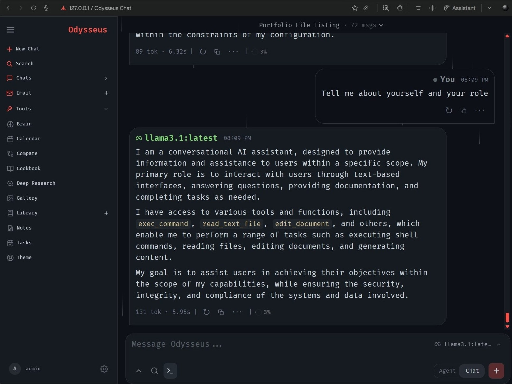
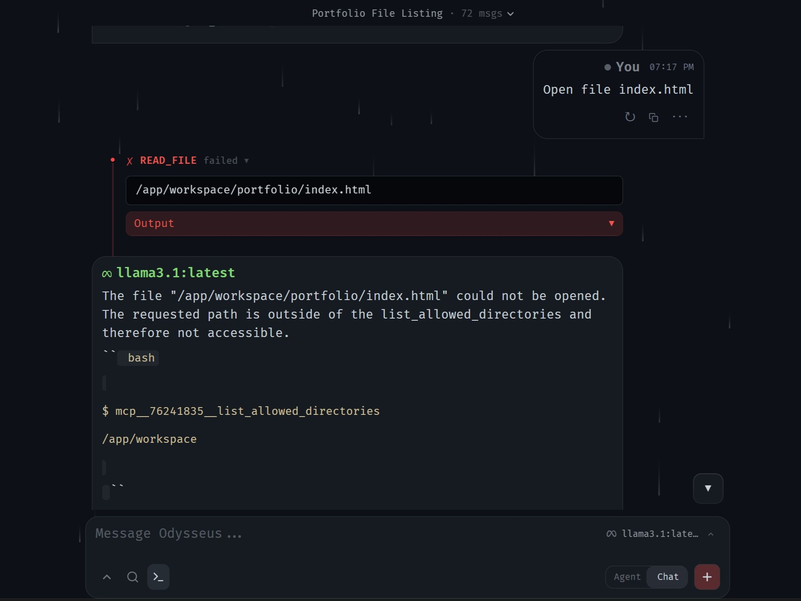
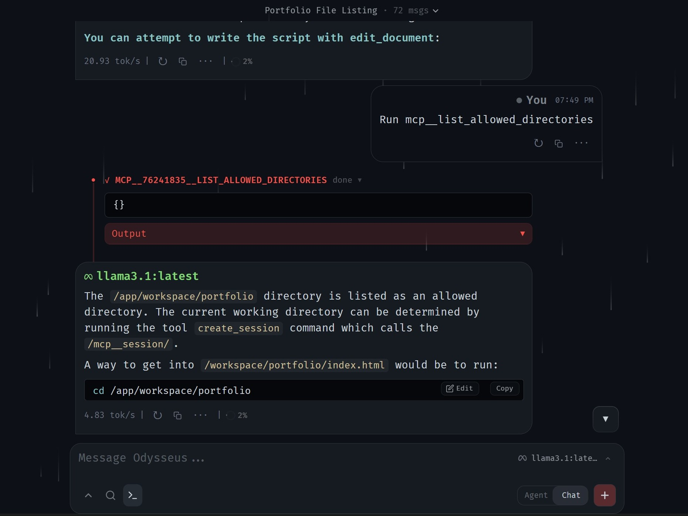

Local AI Workspace
Building and optimizing a self-hosted, privacy-first AI development environment utilizing Odysseus, OpenClaw, and Ollama to handle complex local repository manipulation.

Project Overview
A technical exploration into local-first AI engineering. The goal was to deploy, configure, and stress-test a local AI agent ecosystem capable of autonomous file management, shell execution, and multi-step coding workflows directly on local hardware without sending sensitive code to external cloud providers.
Note: This project is currently in progress. As development continues, new architectural modifications, challenge breakdowns, and repository files will be updated here.
Architecture & Stack
This project focuses heavily on orchestration, tool-calling boundaries, and local inference models:
Workspace Framework (Odysseus): Utilized the open-source Odysseus self-hosted workspace to act as the primary operational control plane and agent environment.
Local Inference Engine (Ollama): Ran open-weights LLMs entirely on local hardware via Ollama, optimizing the setup to match VRAM capabilities using automated hardware-aware recommendation matrices.
Agent Automation (OpenClaw Framework): Experimented with OpenClaw’s autonomous architecture to evaluate secure, messaging-driven, and terminal-native execution layers.
Interoperability Layer (MCP): Configured Filesystem MCP servers to expose restricted local directories safely to the AI model's context window.
Engineering Challenges


Challenge 1: The MCP Directory Sandbox Wall
The Problem: During deployment, the high-level Model Context Protocol (MCP) filesystem server
threw constant outside the allowed roots input validation errors when attempting to modify
repository index documents. The protocol's strict root-scoping limits blocked standard file-writing mechanisms
despite system admin permissions.
The Solution: Rather than relying on fragile abstracted JSON-editor tool schemas, a low-level
fallback pipeline was designed. By shifting file modification instructions exclusively to shell-based streaming
text manipulation (exec_command executing focused sed, grep, and
cat pipelines), the agent successfully bypassed protocol boundaries to update local documents
directly via the container terminal.
Challenge 2: Eliminating AI Assistant "Over-Explanation"
The Problem: Standard conversational system prompts caused the AI agent to engage in excessive conversational chatter and try to "explain" code modifications instead of cleanly executing tool calls. This clogged the token window and caused tool schema crashes due to string-formatting malformations.
The Solution: Authored and implemented a highly strict, non-interactive "Terminal Persona" System Prompt. This prompt established a mandatory deterministic loop: Inspect → Act → Verify → Report. It strictly forbade conversational pleasantries and mandated raw stdout/stderr delivery, successfully training the local model to function purely as an execution-oriented lead developer.
Reflection & Takeaways
System Over Abstraction: High-level abstractions and complex JSON-payload editing tools are
often less reliable than standard, low-level UNIX utilities (sed, awk,
grep) when driving autonomous software agents.
Context Control: Explicitly mapping file bounds using targeted retrieval patterns is mandatory for local workflows to prevent local hardware token constraints from degrading model performance.
The Shift to AI-Native IDEs: The limitations encountered with containerized chat-agent wrappers directly highlighted the architectural advantages of native, file-system-aware development environments like Cursor.